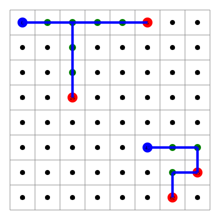

layout: true class: typo, typo-selection --- count: false class: nord-dark, middle, center # ⚡ Making physdes Fast ## A Polyglot Performance Pass — Python · C++ · Rust ### 🐍 → ⚙️ → 🦀 @luk036 👨💻 · 2026 📅 --- ### 📋 Agenda .pull-left[ **Part 1 — The Setup** 🧭 - A three-language repo family 🌍 - The hotspot map 🗺️ - How we measure 📏 **Part 2 — Tier 0: Debug I/O** 🧹 - `ic()` in the DME hot path 🐍 - `log::warn!` per node 🦀⚙️ - Import-time side effects 💥 **Part 3 — Steiner Forest** 🌲 - The O(E²) primal-dual loop 🔁 - Reverse-delete → union-of-paths ✂️ - Results across all three 🏁 ] .pull-right[ **Part 4 — Routing Tree** 🛣️ - `get_tree_structure`: O(n²) → O(n) 📉 - Per-edge allocation removal ⚡ **Part 5 — DME** 🕰️ - Per-level partitions 🔀 - Quickselect rejected on measurement 🔬 - Rust was already optimal 🦀 **Part 6 — Cross-cutting** 🧰 - Benchmarks restored 📊 - Differential verification ✅ - Test output isolation 🧼 **Part 7 — Results & Lessons** 🎓 ] --- class: nord-light, middle, center ## 🧭 Part 1 — The Setup --- ### 🌍 A Three-Language Repo Family The same physical-design algorithms, ported across three languages: .mermaid[ <pre> graph LR PY["🐍 physdes-py\nPython"] CPP["⚙️ physdes-cpp\nC++20"] RS["🦀 physdes-rs\nRust"] PY -->|"same algorithm"| CPP CPP -->|"same algorithm"| RS PY -->|"same algorithm"| RS style PY fill:#e3f2fd,stroke:#1565c0,stroke-width:3px style CPP fill:#fff9c4,stroke:#f57f17,stroke-width:3px style RS fill:#f8bbd0,stroke:#c2185b,stroke-width:3px </pre> ] > A fix in one language should be a *hypothesis* for the others — not a blind copy. 🔍 --- ### 🗺️ The Hotspot Map A code-level review of the core compute paths found four recurring themes: .mermaid[ <pre> graph TD ROOT["physdes core algorithms"] ROOT --> S["🌲 Steiner forest\nO(E²) primal-dual"] ROOT --> R["🛣️ Global router\nO(T²) insertion + O(n²) strings"] ROOT --> D["🕰️ DME\nO(n log² n) partition"] ROOT --> IO["🧹 Debug I/O\nic() · log flush"] style S fill:#ffcdd2,stroke:#c62828,stroke-width:3px style R fill:#ffe0b2,stroke:#e65100,stroke-width:3px style D fill:#c8e6c9,stroke:#2e7d32,stroke-width:3px style IO fill:#e1bee7,stroke:#6a1b9a,stroke-width:3px </pre> ] | Tier | Theme | Fix class | |:-----|:------|:----------| | 0 🧹 | Debug I/O in hot paths | remove / demote | | 1 🌲 | Algorithmic complexity | hoist, index, prune | | 2 🧩 | Allocation & dispatch | constants | | 3 🧰 | Infrastructure | benchmarks, test hygiene | --- ### 📏 How We Measure Each language gets a *native* benchmark harness, plus a shared differential test. | Language | Benchmark | Tests | |:---------|:----------|:------| | 🐍 Python | `pytest-benchmark` (`--benchmark-only`) | `pytest` (605 tests) | | ⚙️ C++ | nanobench (`bench_dme`) + new benches | doctest (132 cases) | | 🦀 Rust | `examples/bench_full` + Criterion | `cargo test` (299 + 11 + 66) | ```text Baseline strategy: git worktree add <dir> HEAD # old code, same build build + run in BOTH trees, compare ``` > Never trust a speedup without a *baseline* and an *equivalence check*. 🔬 --- class: nord-light, middle, center ## 🧹 Part 2 — Tier 0: Debug I/O --- ### 🐍 `ic()` in the DME Hot Path `icecream` debug calls sat inside the merge/embed path — executed **once per tree node** during clock-tree synthesis. ```python def nearest_point_to(self, other): ms = ManhattanArc.from_point(other) ic(self) # ⚠️ prints to stderr, inspects frames ic(ms) # ⚠️ on every call return self._nearest_point_to(ms) ``` - `nearest_point_to` runs per node in `_embed_tree` → ~2N debug prints per run - `icecream` is enabled by default (no `ic.disable()` anywhere) > **Fix:** delete the three calls, drop `icecream` from runtime deps. ✂️ --- ### ⚙️🦀 Hot-Path Logging in C++ and Rust The C++ and Rust DME do the same thing with their logging frameworks: .pull-left[ **⚙️ C++** — `log_with_spdlog` at **info** level, and the logger is configured with `flush_on(info)` → a disk flush per event: ```cpp log_with_spdlog( "Warning: Right node needs elongation..."); ``` ] .pull-right[ **🦀 Rust** — `log::warn!` per internal node, enabled by the default `std` feature: ```rust #[cfg(feature = "std")] log::warn!( "Warning: Right node needs elongation..."); ``` ] > **Fix:** demote to debug/trace level so the default logger filters them out. 🔇 --- ### 💥 Import-Time Side Effects Python modules were doing work *just by being imported*: ```python # src/physdes/steiner_forest/congestion_map.py grid = [[0, 20, 40, 80, 100], ...] draw_congestion_map(grid, "my_congestion.svg") # ⚠️ file write + print on import ``` - Any `import` triggered disk I/O and console output - Made tooling and test collection surprising > **Fix:** guard the demo under `if __name__ == "__main__":`. 🚪 --- class: nord-light, middle, center ## 🌲 Part 3 — Steiner Forest --- ### 🔁 The Primal-Dual Algorithm The Steiner-forest-on-grid solver grows paths from terminals until every required pair is connected, then prunes. .mermaid[ <pre> graph TD INIT["Build grid edges\nE ≈ 2·H·W"] LOOP["Find min-delta\nactive edge"] PAY["Pay all active edges\nby min-delta"] ADD["Add chosen edge\nunion endpoints"] FEAS{"All pairs\nconnected?"} PRUNE["Reverse-delete\nprune redundant edges"] INIT --> LOOP --> PAY --> ADD --> FEAS FEAS -->|"no"| LOOP FEAS -->|"yes"| PRUNE style INIT fill:#e3f2fd,stroke:#1565c0,stroke-width:3px style LOOP fill:#fff9c4,stroke:#f57f17,stroke-width:3px style PAY fill:#fff9c4,stroke:#f57f17,stroke-width:3px style ADD fill:#c8e6c9,stroke:#2e7d32,stroke-width:3px style PRUNE fill:#ffcdd2,stroke:#c62828,stroke-width:3px </pre> ] > Each iteration adds **at most one edge**, so the loop runs $O(|F|)$ times. 🔁 --- ### 🐌 Before: Two Full Passes, Four Finds per Edge Every iteration scanned **all** edges **twice**, and called `find` **four** times per edge: ```cpp for (const auto& edge : edges) { if (uf.find(edge.node_u) == uf.find(edge.node_v)) continue; // 2 finds int root_u = uf.find(edge.node_u); // redundant int root_v = uf.find(edge.node_v); // redundant ... } // ...then a SECOND identical pass to update `paid` ``` $$ T_{\text{main}} \;=\; O\!\left(E \cdot |F| \cdot {\color{#bf616a}\alpha}\right) \quad\text{with a }\; {\color{#bf616a}4\times}\; \text{find constant} $$ Plus `paid` was a **hash map** keyed by `(min, max)` tuples, and a **candidate list** was rebuilt on every improvement. 🗑️ --- ### 🗑️ Before: Reverse-Delete was O(|F|²) The pruning step rebuilt a **fresh union-find for every candidate edge**: ```cpp for (int idx = FPruned.size() - 1; idx >= 0; --idx) { UnionFind tempUF(num_nodes); // O(N) alloc per edge for (int jdx = 0; jdx < F.size(); ++jdx) if (jdx != idx) tempUF.unionSets(F[jdx]...); // re-union all others // ...connectivity check... if (connected) FPruned.erase(FPruned.begin() + idx); // O(|F|) shift } ``` $$ T_{\text{prune}} \;=\; O\!\left(|F|^2 \cdot \alpha \;+\; |F| \cdot N\right) $$ > For a 48×48 grid this dominated everything else. 🐢 --- ### 💡 The Insight: Union of Pair Paths **Key fact:** the accepted edges `F` form a *forest* — every added edge merges two distinct components. .mermaid[ <pre> graph TD A["F is a forest\n(acyclic)"] B["Each pair has a\nunique path in F"] C["Edge is needed iff it lies\non some pair's path"] D["F_pruned = union of\nall pair paths"] E["Equivalent to\nreverse-delete"] A --> B --> C --> D --> E style A fill:#e3f2fd,stroke:#1565c0,stroke-width:3px style B fill:#fff9c4,stroke:#f57f17,stroke-width:3px style C fill:#c8e6c9,stroke:#2e7d32,stroke-width:3px style D fill:#f8bbd0,stroke:#c2185b,stroke-width:3px style E fill:#d1c4e9,stroke:#6a1b9a,stroke-width:3px </pre> ] $$ {\color{#a3be8c}\text{union of pair paths}} \;=\; {\color{#bf616a}\text{reverse-delete result}} $$ > So mark the paths directly — no DSU rebuild at all. ✂️ --- ### ✅ The Fixes (all three languages) | Fix | 🐍 | ⚙️ | 🦀 | |:----|:--:|:--:|:--:| | Iterative `find` (no recursion) | ✅ | ✅ | ✅ | | Hoist `find` 4→2 per edge | ✅ | ✅ | ✅ | | `paid` → edge-indexed array | ✅ | ✅ | ✅ | | Single chosen edge (no list) | ✅ | ✅ | ✅ | | Union-of-paths pruning | ✅ | ✅ | ✅ | ```text before: O(E·|F|·α) main + O(|F|²·α + |F|·N) prune after: O(E·|F|·α) main + O(|F| + paths) prune ``` > Same output, byte-for-byte — verified by differential tests. ✅ --- ### 🏁 Steiner Results | Benchmark | Before | After | Speedup | |:----------|-------:|------:|--------:| | 🐍 Python 8×8 | 13.51 ms | 7.44 ms | **1.8×** | | 🐍 Python 16×16 | 119.3 ms | 76.3 ms | **1.6×** | | ⚙️ C++ 8×8 | 1.13 ms | 0.55 ms | **2.0×** | | ⚙️ C++ 48×48 | 175.6 ms | 129.3 ms | **1.36×** | | 🦀 Rust 10×10 | 5.07 ms | 2.43 ms | **2.1×** | | 🦀 Rust 20×20 | 62.95 ms | 35.04 ms | **1.8×** | <p align="center"> <p></p> </p> --- class: nord-light, middle, center ## 🛣️ Part 4 — Routing Tree --- ### 📉 `get_tree_structure`: O(n²) → O(n) The tree-to-string helper built a **fresh string per subtree**, then copied it into its parent: .pull-left[ **🐍 / ⚙️ / 🦀 — before** ```text fmt(node): s = indent + node for child: s += fmt(child) # copies whole subtree return s # ...again at each ancestor ``` Each node at depth $d$ is copied $d$ times: $$ \sum_{d=0}^{n} (n-d) \;=\; {\color{#bf616a}O(n^2)} $$ ] .pull-right[ **after — one accumulator** ```text fmt(node, out): out.push(indent + node) for child: fmt(child, out) ``` Written once, never copied: $$ {\color{#a3be8c}O(n)} $$ ] > Also killed per-node `" ".repeat(level)` / `ostringstream` allocations. 🧹 --- ### 🏁 Tree-String Results (C++) | Tree size | Before | After | Speedup | |:----------|-------:|------:|--------:| | n = 128 | 1.07 ms | 0.49 ms | **2.2×** | | n = 512 | 12.27 ms | 1.75 ms | **7.0×** | | n = 1024 | 35.18 ms | 4.08 ms | **8.6×** | <p align="center"> <svg width="700" height="200" viewBox="0 0 700 200" xmlns="http://www.w3.org/2000/svg" style="background:#fafafa;border:1px solid #d0d0d0;border-radius:6px"> <text x="16" y="26" font-family="sans-serif" font-size="15" font-weight="bold" fill="#2e3440">get_tree_structure — ms (lower is better)</text> <g font-family="sans-serif" font-size="12" fill="#2e3440"> <text x="90" y="60" text-anchor="end">n=128</text> <rect x="100" y="48" width="107" height="18" fill="#bf616a" rx="3"/> <rect x="100" y="70" width="49" height="18" fill="#a3be8c" rx="3"/> <text x="260" y="62" fill="#bf616a">1.07 →</text> <text x="320" y="62" fill="#2e7d32" font-weight="bold">0.49 (2.2×)</text> <text x="90" y="112" text-anchor="end">n=512</text> <rect x="100" y="100" width="400" height="18" fill="#bf616a" rx="3"/> <rect x="100" y="122" width="57" height="18" fill="#a3be8c" rx="3"/> <text x="510" y="114" fill="#bf616a">12.27 →</text> <text x="570" y="114" fill="#2e7d32" font-weight="bold">1.75 (7×)</text> <text x="90" y="164" text-anchor="end">n=1024</text> <rect x="100" y="152" width="400" height="18" fill="#bf616a" rx="3"/> <rect x="100" y="174" width="46" height="18" fill="#a3be8c" rx="3"/> <text x="510" y="166" fill="#bf616a">35.2 →</text> <text x="560" y="166" fill="#2e7d32" font-weight="bold">4.08 (8.6×)</text> </g> </svg> </p> > The win **grows with n** — the signature of an asymptotic fix. 📈 --- ### ⚡ Per-Edge Allocation Removal (Python) `_find_insertion_point` built a bounding-box `Point` + `nearest_to` object for **every edge** — thousands of throwaway allocations per insertion. .pull-left[ **before** 🐢 ```python possible_path = node.pt.hull_with(child.pt) # Point + 2 Intervals distance = possible_path.min_dist_with(point) nearest_pt = possible_path.nearest_to(point) # Point ``` ] .pull-right[ **after** ⚡ ```python # scalar fast path for 2D: # compute bbox distance + nearest point # with integer arithmetic; only build # Points when keepouts are present ``` ] | Python insertion | Before | After | Speedup | |:-----------------|-------:|------:|--------:| | n = 50 | 15.2 ms | 3.65 ms | **4.2×** | | n = 500 | 1577 ms | 406 ms | **3.9×** | > ⚙️ C++ analog: dropped `std::function` closures, keepouts passed by `const&`. 🦀 Rust: temp-dir isolation. --- class: nord-light, middle, center ## 🕰️ Part 5 — DME --- ### 🔀 The DME Merge-Tree Partition The DME builder partitioned the sink set at every recursion level. .pull-left[ **🐍 / ⚙️ — before** ```text build(nodes): keys = [key(n) for n in sub] # pass 1 median = sorted(keys)[mid] # full sort lt = [n for n in sub if key(n) < median] # pass 2 eq = [n for n in sub if key(n) == median] # pass 3 gt = [n for n in sub if key(n) > median] # pass 4 ``` $4\times$ key evaluations and a sort **per level**: $$ T(n) = 2T(n/2) + O(n\log n) = {\color{#bf616a}O(n\log^2 n)} $$ ] .pull-right[ **after** ⚡ ```text build(nodes): keys = [key(n) for n in sub] # once median = sorted(keys)[mid] # C sort for n, v in zip(sub, keys): # one pass group(v, n) ``` Single stable partition — same tree, fewer passes. ✅ ] --- ### 🔬 Quickselect: Rejected on Measurement A pure-Python **3-way quickselect** would make selection $O(n)$: $$ T_{\text{select}}(n) = O(n) \quad\Rightarrow\quad T(n) = 2T(n/2) + O(n) = {\color{#a3be8c}O(n\log n)} $$ **But** C Timsort beat it at realistic sizes: | n | full build (with quickselect) | full build (sorted) | |--:|------------------------------:|--------------------:| | 256 | **0.73×** 🐌 | 1.0× | | 1024 | 1.10× | **1.15×** ✅ | > Lesson: **asymptotics lose to constants at small n**. Measure, then decide. 🔬 --- ### 🦀 Rust Was Already Optimal Rust's DME used `select_nth_unstable_by` **in place** with `split_at_mut` — no per-level vectors at all: ```rust node_ids.select_nth_unstable_by(mid, |&a, &b| { ... }); let (left, right) = node_ids.split_at_mut(mid); let l = self.build_merging_tree(left, !vertical); let r = self.build_merging_tree(right, !vertical); ``` > The Python/C++ fix **porting target did not exist** in Rust. Don't fix what isn't broken. 🦀 | DME | Before | After | |:----|-------:|------:| | ⚙️ C++ DME_16 | 20.5 µs | 16.6 µs (**1.24×**) | | ⚙️ C++ DME_64 | 84.5 µs | 69.5 µs (**1.22×**) | | 🦀 Rust DME_16 | 15.3 µs | ~unchanged ✅ | --- class: nord-light, middle, center ## 🧰 Part 6 — Cross-cutting --- ### 📊 Benchmarks Restored CI ran `pytest --benchmark-only` — but **collected zero benchmarks**. 😱 .mermaid[ <pre> graph LR CI["CI: pytest --benchmark-only"] NONE["no benchmark files\n→ collects nothing ❌"] ADD["add tests/test_benchmarks.py\n5 benchmarks ✅"] CICPP["C++: bench_steiner, bench_router\n+ xmake targets"] CIR["Rust: bench_full,\nprofile_dme (dhat)"] CI --> NONE NONE --> ADD NONE --> CICPP NONE --> CIR style CI fill:#e3f2fd,stroke:#1565c0,stroke-width:3px style NONE fill:#ffcdd2,stroke:#c62828,stroke-width:3px style ADD fill:#c8e6c9,stroke:#2e7d32,stroke-width:3px style CICPP fill:#fff9c4,stroke:#f57f17,stroke-width:3px style CIR fill:#f8bbd0,stroke:#c2185b,stroke-width:3px </pre> ] > A benchmark step that measures nothing is worse than none — it gives false confidence. 📉 --- ### ✅ Differential Verification Every optimization was checked against the **old code** on randomized inputs: .mermaid[ <pre> graph LR HEAD["git HEAD\n(old)"] NEW["optimized\n(new)"] RAND["random inputs\n2D/3D · keepouts"] DIFF{"compare\noutputs"} EQ["identical ✅\n(tree · cost · nodes · edges)"] RAND --> HEAD --> DIFF RAND --> NEW --> DIFF DIFF --> EQ style HEAD fill:#ffcdd2,stroke:#c62828,stroke-width:3px style NEW fill:#c8e6c9,stroke:#2e7d32,stroke-width:3px style RAND fill:#e3f2fd,stroke:#1565c0,stroke-width:3px style DIFF fill:#fff9c4,stroke:#f57f17,stroke-width:3px style EQ fill:#a3be8c,stroke:#2e7d32,stroke-width:3px </pre> ] | Repo | Differential trials | Result | |:-----|:--------------------|:-------| | 🌲 Steiner (py/cpp/rs) | 600 + 600 + 600 | 0 mismatches | | 🕰️ DME (py) | 300 | 0 mismatches | | 🛣️ Routing (py) | 600 | 0 mismatches | --- ### 🧼 Test Output Isolation — the SVG Story A mystery: **SVG files in the Python repo kept changing**. 🔍 .mermaid[ <pre> graph TD RUN["run C++ tests"] CWD["relative SVG paths\nwritten to process cwd"] POL["polluted physdes-py\nbasic_clock_tree.svg · example_route_*.svg ❌"] FIX["tests write to\ntemp/build dir ✅"] RUN --> CWD --> POL POL --> FIX style RUN fill:#e3f2fd,stroke:#1565c0,stroke-width:3px style CWD fill:#fff9c4,stroke:#f57f17,stroke-width:3px style POL fill:#ffcdd2,stroke:#c62828,stroke-width:3px style FIX fill:#c8e6c9,stroke:#2e7d32,stroke-width:3px </pre> ] **Root cause:** tests wrote SVGs with **relative filenames**, so they landed in whatever directory the process ran from. | Repo | Fix | |:-----|:----| | 🐍 | autouse `_isolate_cwd` fixture → per-test `tmp_path` | | ⚙️ | test `main` chdirs to `%TEMP%/recti_test_output` | | 🦀 | test writes to `std::env::temp_dir()` | > Diagnose from evidence: the `1000×1000` canvas matched the **C++** test, not Python's `800×600`. 🔬 --- class: nord-light, middle, center ## 🎓 Part 7 — Results & Lessons --- ### 📈 Combined Results | Area | 🐍 Python | ⚙️ C++ | 🦀 Rust | |:-----|----------:|-------:|--------:| | 🌲 Steiner forest | 1.6–1.8× | 1.4–2.0× | 1.8–2.1× | | 🛣️ Router insertion | ~4× | ~unchanged | ~unchanged | | 📉 Tree string | O(n²)→O(n) | 2.2–8.6× | O(n²)→O(n) | | 🕰️ DME build | 1.1–1.5× | 1.2× | already optimal | | 🧹 Debug I/O | removed | demoted | demoted | **Verification, every change:** - ✅ differential tests vs `git HEAD` — identical output - ✅ full native test suites green (py 605 · cpp 132 · rs 299+11+66) - ✅ fmt / clippy / black / flake8 / clang-format clean --- ### 🎓 Lessons Learned .pull-left[ **1. Measure before optimizing** 📏 - The `ic()` calls and the O(n²) string were *invisible* without profiling - Quickselect looked better on paper — **0.73× in practice** **2. Asymptotics ≠ wins** ⚖️ - C Timsort beat pure-Python selection at n ≤ 1024 - Keep the constant factor honest **3. Preserve exact output** ✅ - Differential testing vs HEAD caught everything - A speedup that changes results is a bug ] .pull-right[ **4. Port the idea, not the code** 🌍 - C++/Rust are value types — no per-edge heap to remove - Rust DME was already optimal → **no change** - Language-specific smells: `hasattr` 🐍, `std::function` ⚙️, `HashMap` 🦀 **5. Test hygiene is performance** 🧼 - Tests writing to cwd pollute and flake - Temp dirs everywhere **6. Track work in issues** 🎫 - GitHub issue #4 = the living checklist ] --- ### 🗂️ Artifacts | Repo | Commit | Highlights | |:-----|:-------|:-----------| | 🐍 physdes-py | `10a4e9f` | Steiner, routing, DME, benchmarks | | 🐍 physdes-py | `409d422` | test cwd isolation | | ⚙️ physdes-cpp | `414ce67` | Steiner, router, DME, benches | | ⚙️ physdes-cpp | `1936295` | test cwd isolation | | 🦀 physdes-rs | *(staged)* | Steiner, tree-string, log demote | | 🎫 Tracking | issue #4 | full checklist + progress | ```text Verification commands 🐍 pytest · black · isort · flake8 ⚙️ xmake build/run AND cmake --build (no reconfigure) 🦀 cargo fmt · cargo clippy -D warnings · cargo test ``` > Same algorithms. Three languages. One discipline: **measure, fix, verify**. 🎯 --- count: false class: nord-dark, middle, center # 🙋 Q&A **Making physdes Fast — A Polyglot Performance Pass** ### Questions? Discussion? 💬 --- count: false class: nord-dark, middle, center # 👏 Thank You ## Measure. Index. Prune. Verify. 🔬 Slides built with Remark.js 🎉 | KaTeX 📐 | Mermaid 🧩 | Nord Theme 🌙